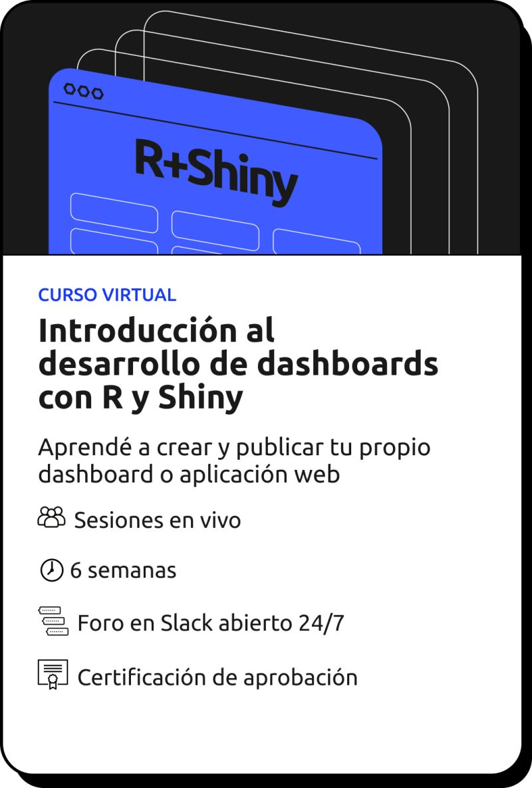
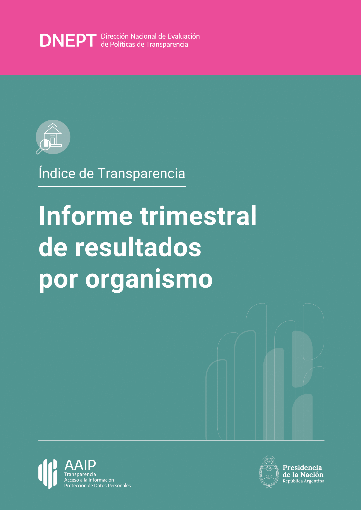
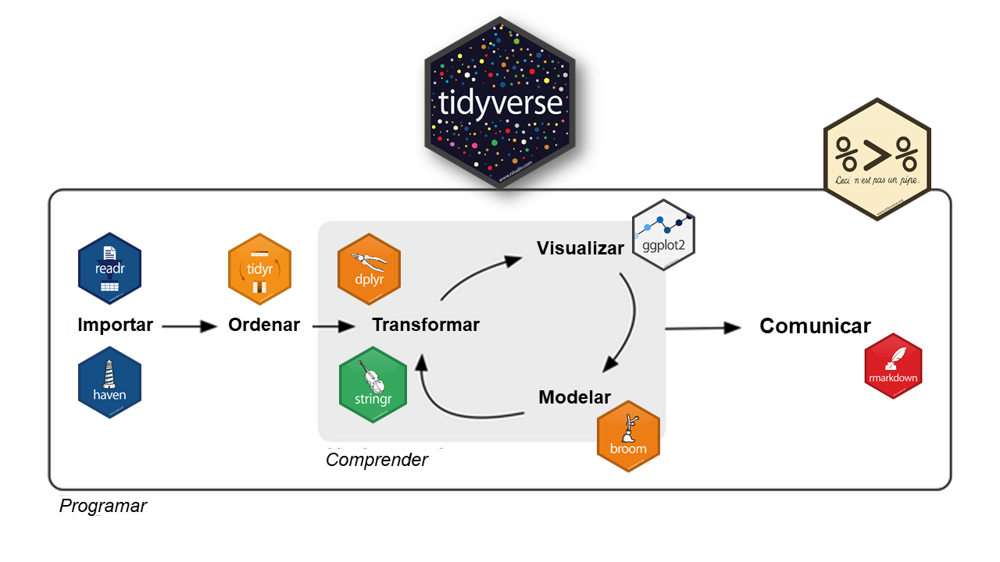

Este 2024 ha sido un año emocionante para Estación R. Hemos alcanzado hitos importantes, sumado aprendizajes y contribuido a la comunidad de datos + R con nuevas iniciativas. A medida que cerramos este capítulo, miramos hacia el 2025 con más energía que nunca.
Dos cohortes del curso “Introducción al Procesamiento de Datos con R”.
Este curso se consolidó como una de nuestras propuestas más populares, ayudando a decenas de personas a dar sus primeros pasos en el análisis de datos con R.


Nuevo curso: “Introducción al desarrollo de Dashboards y Aplicaciones web con R y Shiny”.
De la mano de Elian Soutullo, este curso fue un éxito en su primera versión ya estamos trabajando en una nueva edición para el 2025, además de planear talleres específicos para profundizar en estas herramientas.
Nuestro blog: Finalmente logramos publicar algunos artículos, compartiendo experiencias, tips y reflexiones para seguir aportando al ecosistema de R.
Tips de R: ¡Publicamos más de 200 tips de R en nuestras redes (X, LinkedIn, Mastodon y Bluesky)!. Este proyecto sigue creciendo gracias al entusiasmo y apoyo de la comunidad.
Flujo de trabajo con datos y automatización de reportes.
Trabajamos junto a la Agencia de Acceso a la Información Pública (AAIP) para desarrollar un flujo de trabajo que automatiza la importación, limpieza y publicación de datos. Este sistema no solo optimiza el proceso para publicar datos en el portal de datos abiertos del organismo, sino que también genera más de 200 reportes automáticos con solo unos clics.

Capacitación de equipos de datos.
Diseñamos y llevamos adelante una capacitación al equipo de datos de la AAIP, dándoles asistencia y herramientas para que puedan mantener y mejorar el flujo de trabajo con sus propias manos.

Seguiremos apoyando a las organizaciones en el diseño de flujos de trabajo con datos y tableros que faciliten el procesamiento de datos, el análisis de la información y la toma de decisiones. Siempre tratamos de acompañar este trabajo con un plan de capacitación integral para que las organizaciones se conviertan en dueñas de sus propios procesos.
Ya estamos diseñando y planificando nuevos cursos para acompañar tu crecimiento en el mundo de la Ciencia de Datos con R.
✅ Una nueva edición del curso “Introducción al Procesamiento de Datos con R”, ahora también con su versión asincrónica para que la hagas a tu ritmo.
✅ Una nueva edición del curso “Introducción al desarrollo de Dashboards y Aplicaciones web con R y Shiny”.
✅ Nuevos cursos como:
Estamos trabajando en el desarrollo de una nueva página web. Desde allí, podrás:
Nada de esto sería posible sin el apoyo de la comunidad que cree en nuestro trabajo y en la importancia de fomentar una cultura de datos abierta y accesible. Estamos entusiasmados por todo lo que viene en el 2025 y esperamos seguir creciendo juntos.
¡Sigamos explorando y aprendiendo con R!